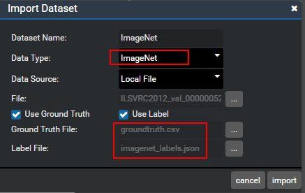
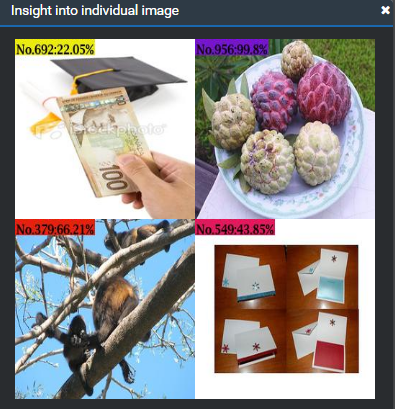

Viewing the Running Result
After running completes, a result folder named after the timestamp is generated in the out folder in the root directory of the project. In this case, you can right-click the PostProcess node and choose a result from the shortcut menu to view the result.

Three types of results can be viewed: image result, statistical result, and profiling result.
Check whether the input dataset contains the ground truth file （calibrated truth data） and label file (label dictionary file), which affect the image result and statistical result.
The following describes how to select a label dictionary when a dataset is imported:
The label dictionary file is imported during data import. Set Data Type to ImageNet, Ground Truth File to the calibrated truth data, and Label File to the label dictionary file, as shown in Figure 2.
Figure 2 Configurations for importing a label dictionary file

Different options lead to different results, as described in Table 1.
Table 1 Results of different options
Therefore, the statistical result availability depends on the ground truth file while the image result availability depends on the label file. The details are described as follows:
Image Result
The image result displays the prediction result of image inference. The category and prediction probability are shown on the upper left corner of each result image.
If a label dictionary file that matches the model is provided along with the imported dataset, the label text is also displayed, as shown in Figure 3.
Figure 3 Image result example using the classification network -1

 NOTE:
NOTE:
The label on each image represents a category and the probability that the image belongs to the category. Labels may share similar meanings. Therefore, one image may have multiple category labels.If the label dictionary file is not imported or the label dictionary file does not match the model, only the label ID is displayed, as shown in Figure 4.
Figure 4 Image result example using the detection network -2
 NOTE:
No.*** （for example, No.692） indicates the predicted category No., and the percentage (for example, 22.05%) indicates the probability that the image belongs to the category.
Statistical Result
If a calibrated ground truth file is imported along with the dataset, statistical result is available.
The statistical result is displayed as a table, listing the number of inferred images, the number of categories （the default number of categories for ImageNet is 1000）, and the top n hit accuracy, as shown in Figure 5.
Figure 5 Statistical result example
Table 2 Statistical result description
To view the statistical result, the image data to be inferred must be contained in the ground truth file. Otherwise, the following error message is displayed, as shown in Figure 6.

Profiling Result
The result is supported only after the compilation in the local simulation environment. For details about the profiling result in the Atlas DK or ASIC environment, see 3 "Profiling" in the Mind Studio Auxiliary Tools.